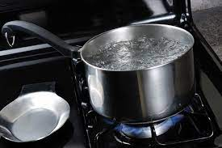
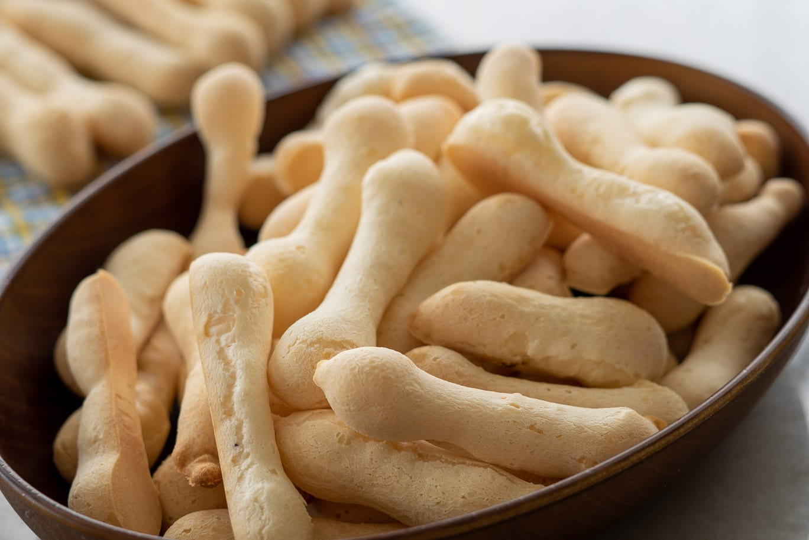
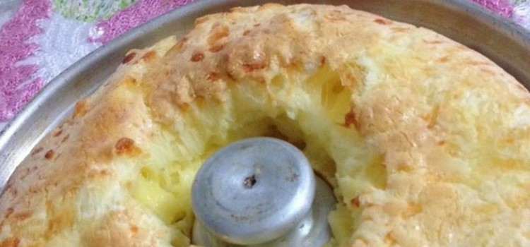
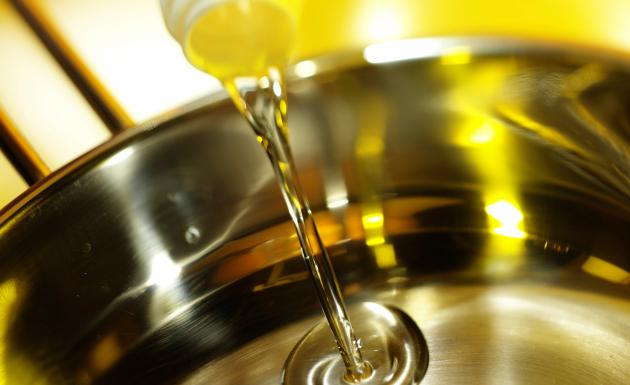
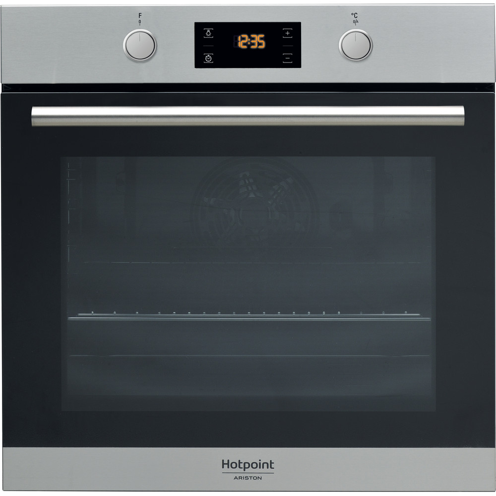

- 800 g de polvilho azedo
- 1 xícara de água
- 1 xícara de leite
- 1/2 xícara de óleo
- 2 ovos
- 100 g de queijo parmesão ralado
- sal a gosto

Em uma panela, ferva a água e acrescente o leite, o óleo e o sal.

Adicione o polvilho aos poucos até dar liga. Pode ser que você não precise usar os 800g, então coloque devagar e sove a massa até soltar da mão: esse é o ponto.

Quando a massa estiver morna, acrescente o queijo parmesão, os ovos e misture bem.

Unte as mãos e enrole bolinhas de 2 cm de diâmetro.

Disponha as bolinhas em uma assadeira untada com óleo, deixando um espaço entre elas.

Asse em forno médio (180º C), preaquecido, por cerca de 40 minutos.